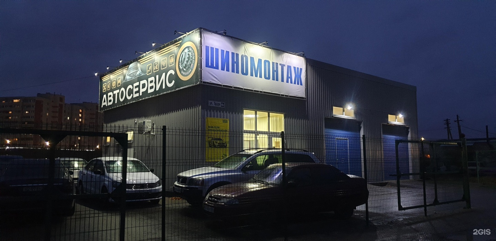
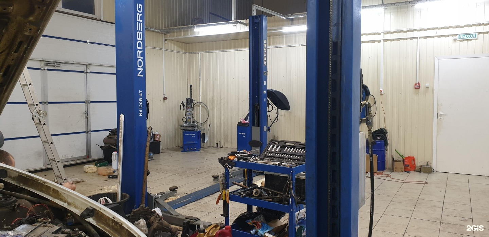
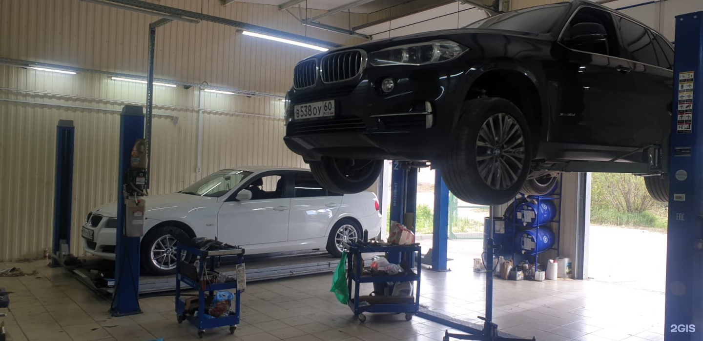
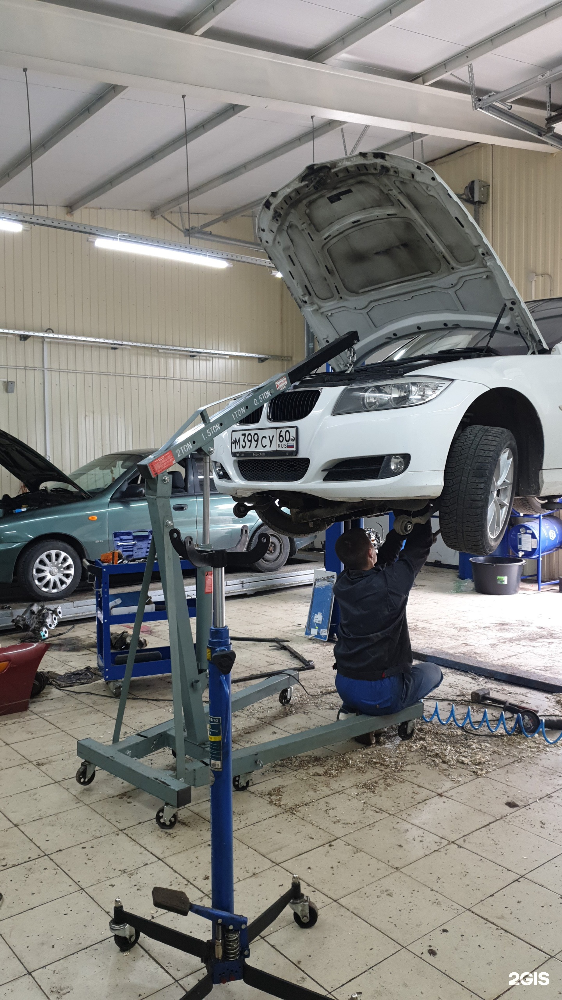

02
Ремонт ходовой части автомобиля
В том числе ремонт пневмоподвески.
03
Обсудить ремонт
Фото организации · 2ГИС
Услуги
В том числе ремонт пневмоподвески.
Расскажите, что происходит с автомобилем
Товары
Товар · Жидкость стеклоомывателя
от 430 ₽
Товар · Автомобильные аккумуляторы
от 3200 ₽
Товар · Автомобильные аккумуляторы
от 8300 ₽
Товар · Автомобильные аккумуляторы
от 9500 ₽
Дата опубликованного прайса: 19.10.2026. «От» означает начальную стоимость позиции. Наличие и актуальную стоимость уточняйте по телефону. Стоимость работ сервиса уточняйте по телефону.
Отзывы
Посетители отмечают, что мастера находили причину неисправности после неудачных обращений в другие сервисы.
Один клиент положительно оценил устранение скрипа тормозных колодок.
В одном из отзывов хвалят внимание к клиенту и его обстоятельствам.
Пересказ мнений посетителей без имён авторов. Все отзывы в 2ГИС
Фото



Контакты
Запсковье